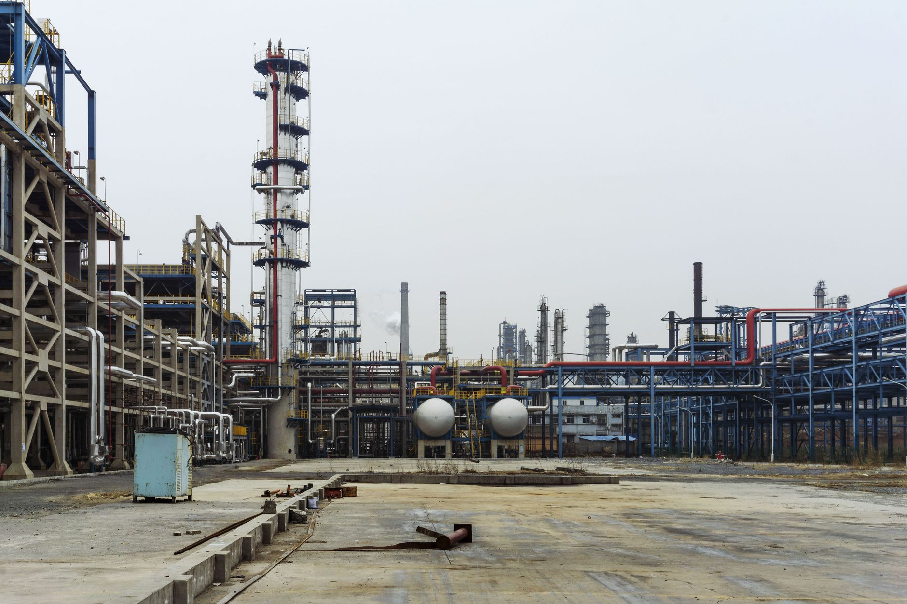

게르마늄 한국산 대체, 공급망 판세 어디까지 왔나

중국은 2023년 8월 게르마늄·갈륨 수출 허가제를 전격 시행했다. 이후 한국·일본·미국 등으로의 수출 허가가 사실상 중단되면서 글로벌 게르마늄 현물 가격은 2023년 초 kg당 800~900달러에서 2024년 말 1,200달러 이상으로 상승했다. 중국의 글로벌 게르마늄 생산 점유율은 약 59~63%다.
고려아연은 아연 제련 부산물에서 게르마늄을 회수하는 공정을 2024년부터 시범 운영 중이며, 2025~2026년 내 연간 5t 규모 상업 생산을 목표로 하고 있다. 게르마늄 5t은 금액으로 약 60억 원(kg당 1,200달러 기준)이며, 현재 한국 연간 수요 추정치(약 8~10t)의 50~60%에 해당한다.
게르마늄의 주요 수요처는 광섬유 프리폼(이산화게르마늄 도핑), 적외선 광학계(IR렌즈), 태양전지(다중접합 셀) 세 분야다. 한국 내 주요 수요 기업은 KT서브마린(해저케이블), LIG넥스원·한화시스템(적외선 광학), 한화큐셀(우주용 태양전지) 등이다.
대안 공급국으로는 캐나다(Teck Resources, 연 30t 내외), 러시아(연 5t), 벨기에(Umicore, 재활용 기반)가 있으나 모두 공급 규모가 제한적이다. 특히 Umicore는 스크랩 기반 재생 게르마늄에 주력하고 있어 순도·공급 안정성 측면에서 프리미엄 수요를 완전히 대체하기 어렵다.
현장에서 게르마늄은 '없으면 라인이 멈추는' 소재다. 광섬유 공정에서 GeO₂ 도핑 농도가 조금만 달라져도 전송 손실이 커지기 때문에, 공인된 공급사의 인증된 등급 소재만 투입 가능하다. 고려아연의 게르마늄이 실제 공급망에 편입되려면 2025~2026년 내 KT서브마린·한화 등 수요처의 품질 승인(Qualification)을 마쳐야 한다.
더 중요한 포인트는 '게르마늄 대체'가 단순한 소재 국산화가 아니라 한국이 중국의 광물 외교 압박에 버티는 구조를 만드는 것이라는 점이다. 2023년 이후 중국의 수출 규제는 특정 국가를 표적으로 삼는 방식으로 진화했고, 한국은 외교적 공간을 확보하기 위해 소재 자립도를 높여야 하는 압박을 받고 있다.
고려아연은 게르마늄·갈륨 동시 생산으로 '전략광물 복합 공급자' 포지션을 구축한다. 단순 제련소가 아닌 국가 공급망 인프라 기업으로 재평가될 경우, 정책 금융(산업은행·수은 등) 지원과 세제 혜택도 추가로 기대할 수 있다.
방산·우주 분야도 수혜권이다. LIG넥스원·한화시스템의 적외선 탐색기, 한화에어로스페이스의 위성 태양전지는 게르마늄 안정 조달 없이는 양산 계획이 흔들린다. 국내 생산 기반이 확보되면 방산 수출 경쟁력도 간접 강화된다.
Umicore(벨기에)·5N Plus(캐나다) 등 서방권 게르마늄 공급사도 반사 수혜를 받는다. 수요처들이 다변화 조달을 추진하면서 이들 기업의 수주가 증가하고 있으며, 2024년 5N Plus 게르마늄 부문 매출은 전년 대비 30% 이상 증가한 것으로 알려졌다.
중국 운남성·내몽골 소재 게르마늄 제련소들은 한국 시장 접근이 구조적으로 차단된다. 당장 매출 손실보다는 장기적으로 '게르마늄 무기화'의 효력이 약화된다는 점이 더 큰 타격이다.
단기적으로 게르마늄 스크랩·재생 소재 시장의 가격이 조정될 수 있다. 공급망 불안이 완화될수록 고가에 재고를 쌓은 중간 트레이더들의 평가손이 발생한다. 2024~2025년 게르마늄을 1,500달러/kg 이상에 비축한 일부 업체는 손실 리스크에 노출된다.
게르마늄 조달 전략의 첫 번째 행동은 '품질 인증 일정 역산'이다. 고려아연 생산 개시 시점인 2025~2026년을 기준으로, 지금 당장 샘플 수령 및 품질 테스트 일정을 협의해야 한다. 인증 없이는 공급이 시작돼도 실제 사용이 불가능하다.
중기적으로 게르마늄 재활용(Recycle Ge) 비율을 높이는 것이 비용과 리스크 모두를 줄이는 방법이다. 광섬유 공정 스크랩에서 GeO₂를 회수하는 내부 순환 시스템 구축을 검토하라. 국내 일부 광섬유 업체가 이미 파일럿 수준에서 진행 중이다.
실제 조달 현장에서는 — 2023년 중국 규제 직후 국내 IR광학 업체 한 곳이 캐나다산 게르마늄 잉곳 6개월치를 긴급 발주했다가, 납기가 16주에서 28주로 늘어나 라인 가동을 일시 조정한 사례가 있었다. 대안 공급선은 '있다'는 사실만으로는 의미가 없다. 실제 납기와 품질 이력을 직접 검증한 공급선만이 진짜 대안이다.
이 포스팅은 쿠팡 파트너스 활동의 일환으로 수수료를 제공받습니다.